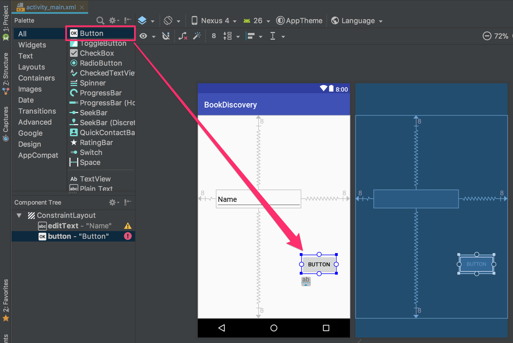
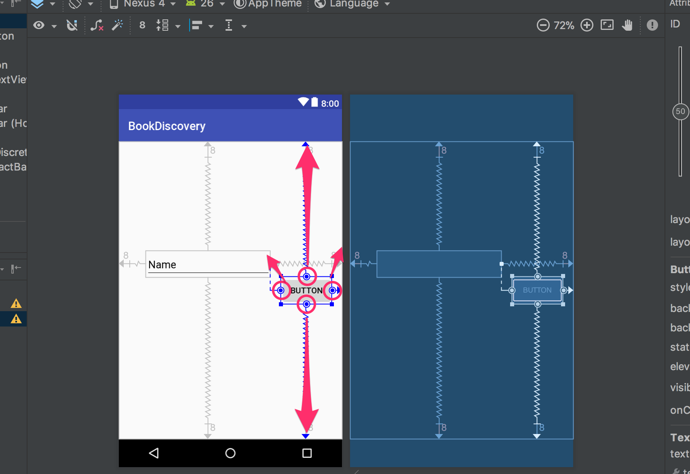

Layout Editor / ConstraintLayoutを使用したレイアウト実装と動作確認
当ページではAnrdoidアプリのプロジェクト作成完了から検索画面のレイアウト完了まで解説しています。
前のメージでAndroidアプリのプロジェクト作成に関して解説しています
次のページで検索画面のプログラム実装、REST API通信に関して解説します。
Layout Editor / ConstraintLayout
Layout Editor、ConstraintLayoutの使い方を学びながら画面のレイアウトを作成していきます。
このページで作成する画面には最終的に以下の機能を実装していきます。
- 文字入力機能
- 画面遷移
- 蔵書/図書館検索結果取得
Androidアプリのプロジェクト開始時に生成されたxmlレイアウトファイルにウィジェットなどを配置し、ウィジェットごとに制約を設定して以下画像のように表示位置を決めていきます。
ここに完成画面を表示
Layout Editor
視覚的にViewやWidgetを配置することができるようになった、特にConstrainsLayoutと
合わせて使うことで画面のレイアウトを行う際にxmlによるプログラムを記述する手間が
省きながら実際に配置を確認できるようになった。

各領域の名称は以下の通りです
| No. | 領域名 | 説明 |
|---|---|---|
| ① | Palette | レイアウトに配置できるウィジェットとレイアウトリストを表示されています |
| ② | Component Tree | レイアウトのビュー階層を表示/移動することができます、Viewの重なりもここで調整します |
| ③ | ツールバー | レイアウトの外観設定やプロパティを編集するためのボタンが表示されています |
| ④ | デザイン エディタ | 実際の見た目が確認できるデザインビューと制約を確認できるブループリントビューが表示されまる |
| ⑤ | Properties | 現在選択されているビューの詳細な情報が表示されます |
ConstraintLayout
Android 2.3(Gingerbread)以上を対象に開発を行う場合に利用することが可能。
constraint(制約)をViewやWidgetに設けることでレイアウトを決めることができる。
従来の”Linear Layout”や”Relative Layout”に比べネスト構造を減らした実装を行うことができるようになった。
ConstraintLayoutの画像を表示
制約という単語ですがgoogle翻訳としては
ある条件を課して、自由にはさせないこと。その物事のために必要な条件
とあります、Layoutに当てはめるとコンポーネント同士を隣接させるという制約を
レイアウト作成
では検索画面のレイアウト作成にはいっていきます
まずは以下のxmlレイアウトファイルを開きましょう
app -> res -> layout -> activity_main.xml

以下の画像のようにLayout Editorが表示されたら、サンプルの為で始めから表示されている“Hello World”をクリックしてdeleteキーで削除します
これで画面上に何もなくなりスッキリしました。
まず検索を行うためには何かしらの情報が必要になります今回は、蔵書検索を行いたいので、そのために蔵書名の一部が知りたいです、検索する蔵書は利用者によって違いますので、検索したい本の一部を入力してもらえると検索の情報になりそうです。
文字入力をアプリで受け付けるためには文字入力を受け付けるためのウィジェットを使う必要があり、
その場合はEditTextというウィジェットを使います、ではこれをデザインビューに配置していきます。
Layout Editor内にあるPaletteからPlain Textをクリックしたまま引っ張ってデザインビューでクリックを離すとeditTextが表示されます
続いてウィジェットやビューをデザインビューに乗せたら表示させたい位置に配置します、そのために”editText”に制約をつけていきます。
まずは”editText”は画面左隅と隣合うように配置させるため、”editText”左枠に表示されている ◯をクリックしたまま画面の左端まで引っ張って放します
“editText”が以下の画面のように画面左隅に近づいたと思います。
先ほどの手順により画面左端とeditTextを隣り合わせる”制約”が設定されたことになります。
では上下と右辺も同じように各画面端と隣接する制約を設定してみましょう。
上下左右に制約を付けるとeditTextは画面の真ん中に表示されると思います
続いて一つ目のeditTextを中央より少し左上に配置するために縦横の”バイアス”を以下の通り調整します
バイアスを動かすと対象の方向に制約の範囲で動かすことができます
| バイアス方向 | 設定値 |
|---|---|
| 垂直バイアス | 30 |
| 水平バイアス | 25 |
次に図書館検索用のEditTextを追加し画面の上下左右と制約をつけます

２つ目のeditTextを１つ目のEditTextの下に配置するために縦横の”バイアス”を以下の通り調整します

| バイアス方向 | 設定値 |
|---|---|
| 垂直バイアス | 50 |
| 水平バイアス | 25 |
次は２種類の検索のために２つボタンを配置していきます
“Plain Text”の時と同じように今度はPaletteからButtonをクリックしたまま引っ張りデザインビュー上で放します
“蔵書検索”用のボタンの配置のため制約を設定していきます
| Buttonの辺 | 隣り合わせる箇所 |
|---|---|
| 上辺 | 画面上端 |
| 左辺 | “editText”右端 |
| 下辺 | 画面下端 |
| 右辺 | 画面右端 |
上の”editText”と同じ高さに調整するため、バイアスを調整します
| バイアス方向 | 設定値 |
|---|---|
| 垂直バイアス | 30 |
| 水平バイアス | 50 |
残りの”図書館検索”用ボタン、検索履歴ボタンの２つを以下の画面の通り制約を使って配置してみましょう
- レイアウト完成時にはComponent TreeにButton2、Button3が追加されます
最後に各ボタンに表示される文字を修正します
右上のButtonをクリックし、右に表示されるAttributesエリアから”text”項目を探し、
蔵書検索と入力します
他の２つのボタンも以下のように表示される文字を変更しましょう
これで検索画面のレイアウトは完成です、変更された画面を確認してみましょう。
動作確認
配置したレイアウトで実行されることを確認してみましょう、
今回はAndroid Studioに内臓されているエミュレータ（仮想デバイス）を使って動作確認を行います。
アプリを実行するためには下記画面のRunボタンをクリックします
実行するデバイスかエミュレータの選択画面が表示されますが、以下のように何も表示されないか、
AndroidデバイスをPCに繋いでいる場合はデバイスが表示されているかもしれません。
今回はエミュレータを使用しますので、Create New Virtual Deviceをクリックしてエミュレータを作成します。
作成するエミュレータを選びますのでPixelを選択してNextをクリックします
エミュレータにインストールするAndorid OSのバージョンを選択します。
Marshmallowを選択してNextをクリックします
エミュレータの名前や設定変更画面では変更は行わずにFinishをクリックします
エミュレータの作成が終わり実行するデバイスの選択画面に戻ります
今回は作成したエミュレータの名前が表示されるので、Pixel API 23を選択してOKをクリックします
Androidのエミュレータが起動し
“layout_main.xml”で作成したレイアウトが表示されれば成功です！
これで検索画面のレイアウト作成が完了です、次のページで今回作成したレイアウトのボタンやEditTextにプログラムでイベントを
実装していきます。 非同期処理、ネットワーク通信の実装